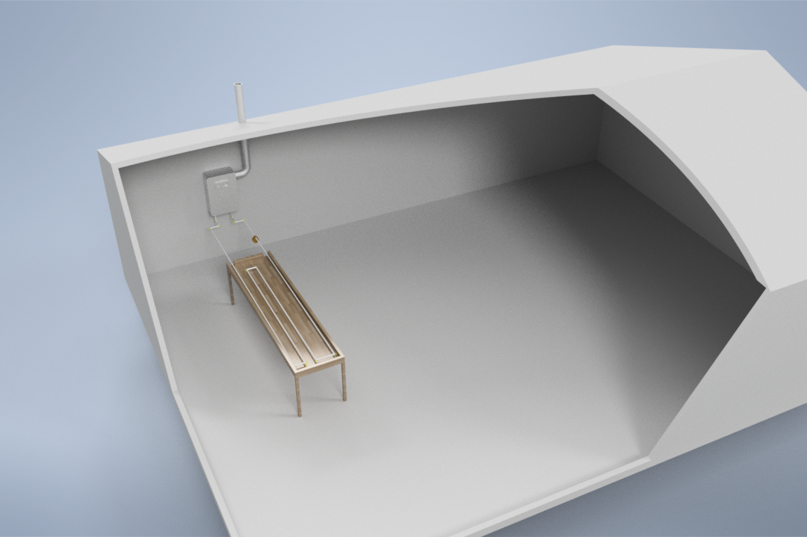
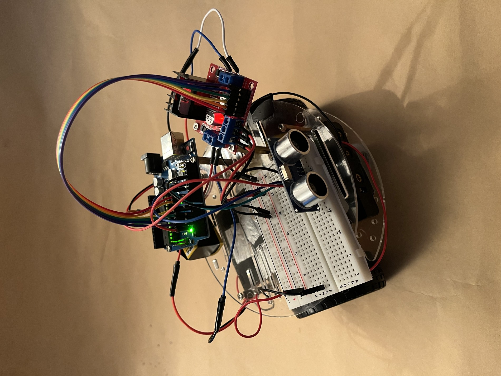
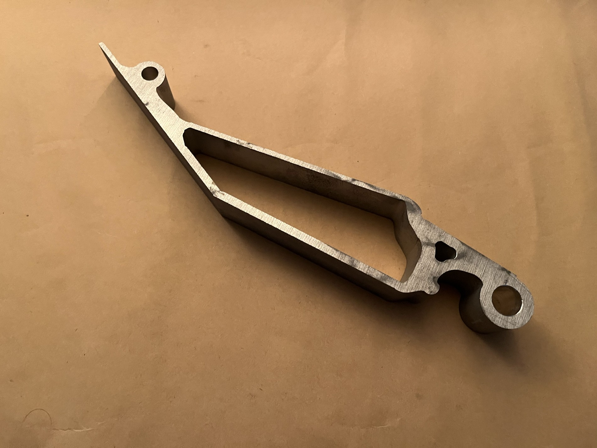
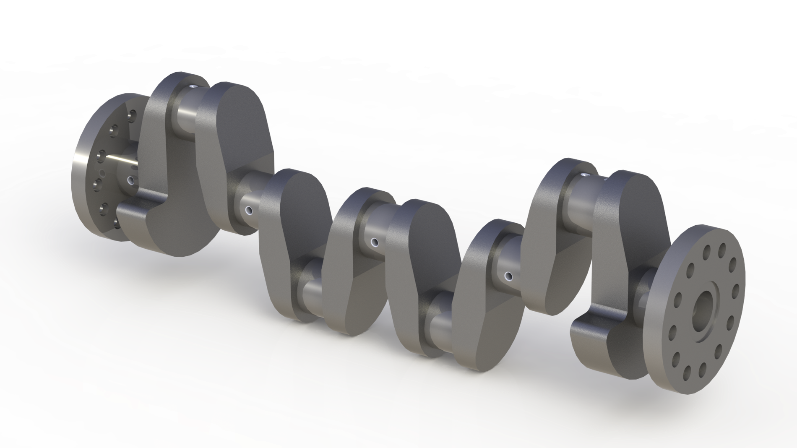

club_school_projects

01
senior_capstone_design
A hands-on automated assembly learning tool for the UMASS ME Department, featuring 5 smart-sensor stations and a UR5e robotic arm.

02
engineers_without_borders
Project management on a greenhouse repair & biogas heating system, plus design work on a rainwater catchment system.

03
ultralightweight_wrench
Generative design and manufacturability iteration on an ultralight bike wrench: 35% under target weight.

04
fundamentals_of_ee_autonomous_car
A distance-sensing robot with variable motor speed control, built on an ATmega328P / Arduino Uno.

05
formula_sae_pedal_box_design
Generative design and manufacturability refinement of gas/brake pedals for a Formula SAE race car.

06
manufacturing_processes_crankshaft_modeling
Modeled an engine crankshaft and casting mold to demonstrate isothermal forging.